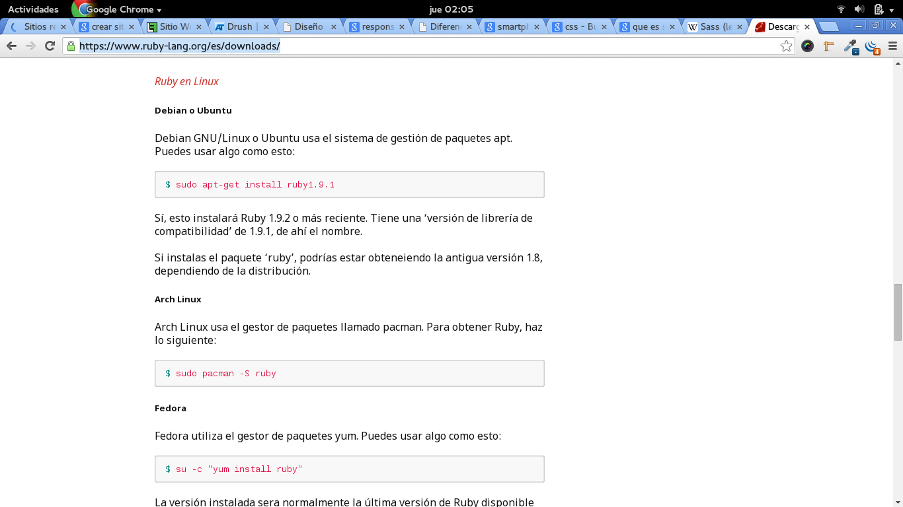

¿Quienes somos?
La Vida Real....
-Hola!! Vamos a jugar Raquet
-Si!! claro, ¿Donde?
-Oye ps no se..
-Yo conozco una pero siempre esta lleno..
-si yo igual conozco una pero siempre esta lleno..
-Bueno tendra que ser en otra ocasión..
-Bueno.. nos vemos.. te aviso si logro reservar algun Raquet disponible..
La siguiente ocasión.....
-Hola!! Buenos dias , ¿Tiene alguna cancha disponible?
-No!!! lo siento no tengo ninguna disponible
-¿Y para mañana?
-Tampoco, vino otro grupo antes y ya me pagaron para mañana.

¿Como lo hace la gente en este momento?
-hacen la reserva de forma presencial o llamando a algun recinto deportivo. Lo que ocasiona perdida de tiempo
-la mayoria de los recintos no son conocidos por los deportistas.
-Dichos recintos pierden dinero, la gente no sabe donde se encuentran.
Lo que generalmente ocurre...
“-Buenos dias, ¿Tiene una cancha disponible para hoy a las 19:00?
-No, lo siento, Todas las canchas estan reservadas para este fin de semana”
La recepcionista..

Nosotros..
Yo tengo una solución!!

Solución
el cliente puede reservar una cancha desde su celular o el internet!!!
El cliente puede ver los Recintos Disponibles en un mapa y ver si se encuentra cerca o no
Los Recintos Deportivos podran mostrar su ubicacion y si esta disponible o no.
Where we play?
¿Donde Jugamos?
Podemos instalar un unico tema en el sitio o varios temas.

Cambiando un tema por otro es posible modificar el aspecto completo de la web, sin cambiar con ello las funcionalidades implementadas y los contenidos creados.
Como Instalar un tema
Forma Tradicional
Los temas se descargan de la pagina oficial de drupal http://drupal.org/project/themes en formato zip o tar.gz
Descomprime el tema en la carpeta misitio/sites/all/themes/
Una vez llegado a este paso el sitio estará disponible en nuestro sitio, solo necesitas activarlo y que sea el tema por defecto
Adaptive Theme
Mas que un tema es un framework para desarrollar subtemas en drupal.
¿Que es un Subtema?
Es un tema de drupal que hereda caracterizticas de temas base, podemos crear un subtema a partir de un tema 'padre' sin necesidad de alterar su funcionamiento
Entonces.. ¿Como creamos un subtema con Adaptive Theme?
Lo primero seria descargar el tema desde https://www.drupal.org/project/adaptivetheme ya sea mediante la forma tradicional o mediante Drush
FORMA TRADICIONAL
Dentro la carpeta adaptivetheme se encuentra la carpeta at_core, at_admin, at_subtheme
Copiamos la carpeta at_subtheme a la carpeta donde se encuentran nuestros temas de drupal
Renombramos la carpeta por el nombre que queramos asignarle a nuestro subtema
Dentro de la carpeta de nuestro subtema se encuentra el archivo adaptivetheme_subtheme.info El cual tendremos que modificar como:
Luego abrimos el archivo y tenemos que modificar los siguientes campos:
- name = El nombre que queramos darle
- description = La descripcion que queramos hacer de nuestro subtema
Con esto tendremos listo nuestro nuevo subtema para usarlo en nuestro sitio drupal
¿Que es Diseño Responsivo?
Una Forma de desarrollar sitios asegurando, que el diseño está optimizado para que el formato se ajuste en relación al tamaño del dispositivo
¿Como puedo usar AdaptiveTheme para que mi sitio sea Responsivo?
Adaptive theme provee de hojas de estilo en cascada(css) que usaremos para modificar el tema de nuestro sitio
global.base.css - global.styles.css
Estos archivos contienen los estilos genericos que seran usados en el sitio
Cualquier estilo que sea escrito en estos archivos se cargara en el sistema en cualquier resolucion o dispositivo
responsive.desktop.css
Los estilos que vayamos colocando en este archivo solo se veran en dispositivos grandes como ser laptop, pc de escritorios, etc.
responsive.smalltouch.landscape.css - responsive smalltouch.portrait.css
Adaptive theme maneja una logica de "primero el dispositivo mas pequeño", es decir que cargara el archivo correspondiente segun a su tamaño.
Por ejemplo el archivo responsive.smalltouch.landscape.css se cargara en los dispositivos smartphone cuando se encuentren en posición horizontal
en cambio el archivo responsive.smalltouch.portrait.css se cargara en los dispositivos smartphone cuando esten en una posición vertical
responsive.tablet.landscape.css - responsive.tablet.portrait.css
Cuando el sitio se este visualizando desde una tablet o un smartphone de una resolución muy grande cargara estos archivos igualmente ya sea segun su posición
responsive.tablet.landscape.css => horizontal
responsive.tablet.portrait.css => vertical
¿Si mi navegador es IE8 o IE9?
Adaptive Theme te ofrece un archivo que puedes ir modificando para asignarle tu propia guia de estilos a internet explorer ya sea en su version 8 o 9
Internet explorer 9 => lt-ie9.css
Internet explorer 8 => lt-ie8.css
¿Puedo acelerar mi proceso de desarrollo con Adaptive Theme?
Como Adaptive theme utiliza cascading styles sheets (css)
Entonces ¿Por que no usar un lenguaje precompilador que me permita escribir codigo css mas rapido?
Sass (Syntactically Awesome Stylesheets)
Sass es un metalenguaje pre-procesado de css, nos permite acelerar el diseño responsivo a la hora de escribir archivos css
¿Como instalarlo?
Sass es una "gema" de ruby asi que tenemos que instalar primero ruby en nuestras computadoras
En la pagina oficial de ruby se muestra los enlaces de descarga para diferentes sistemas operativos y su manual de instalación
https://www.ruby-lang.org/es/downloads/ Utilizar Sass en Adaptive theme
Adaptive Theme ya tiene Sass incorporado en su proyecto, si queremos usar Sass en lugar de css solo debemos borrar todos los archivos css del tema y compilar los archivos .scss que es el formato de Sass
¿Que nos provee Sass?
Podemos Crear variable reutilizables con Sass
$font-stack: Helvetica, sans-serif;
$primary-color: #333;
body {
font: 100% $font-stack;
color: $primary-color;
}
¿Que nos provee Sass?
Podemos realizar anidamientos de css con Sass
nav {
ul {
margin: 0;
padding: 0;
list-style: none;
}
li { display: inline-block; }
a {
display: block;
padding: 6px 12px;
text-decoration: none;
}
}
¿Que nos provee Sass?
Podemos realizar importaciones de archivos con Sass
@import 'reset';
body {
font: 100% Helvetica, sans-serif;
background-color: #efefef;
}
¿Que nos provee Sass?
Podemos utilizar Mixin (funciones) con Sass
@mixin border-radius($radius) {
-webkit-border-radius: $radius;
-moz-border-radius: $radius;
-ms-border-radius: $radius;
border-radius: $radius;
}
.box { @include border-radius(10px); }
¿Que nos provee Sass?
Podemos ampliar funcionalidades con @extend con Sass
.message {
border: 1px solid #ccc;
padding: 10px;
color: #333;
}
.success {
@extend .message;
border-color: green;
}
.error {
@extend .message;
border-color: red;
}
.warning {
@extend .message;
border-color: yellow;
}
¿Que nos provee Sass?
Podemos usar operadores +,-,*,/ y % con Sass
.container { width: 100%; }
article[role="main"] {
float: left;
width: 600px / 960px * 100%;
}
aside[role="complimentary"] {
float: right;
width: 300px / 960px * 100%;
}}
¡Gracias!
Drupal Camp Bolivia 2014
Christian Marcelo Tola Pacheco | @cmtp_k52 https://www.drupal.org/u/cmtp.k52
Contacto:christian@koala-soft.com